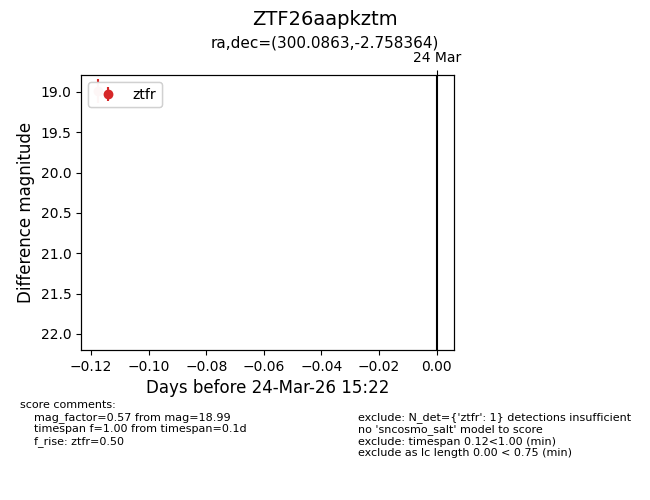
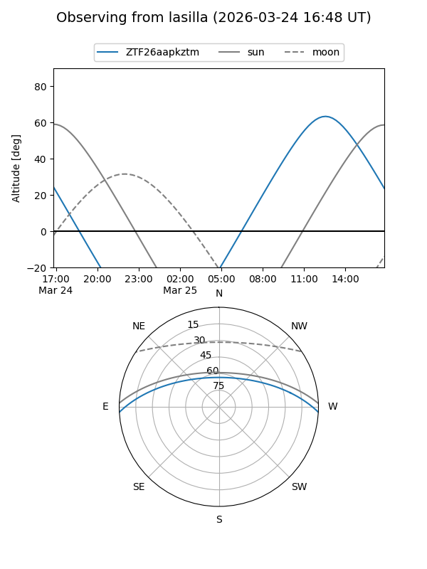
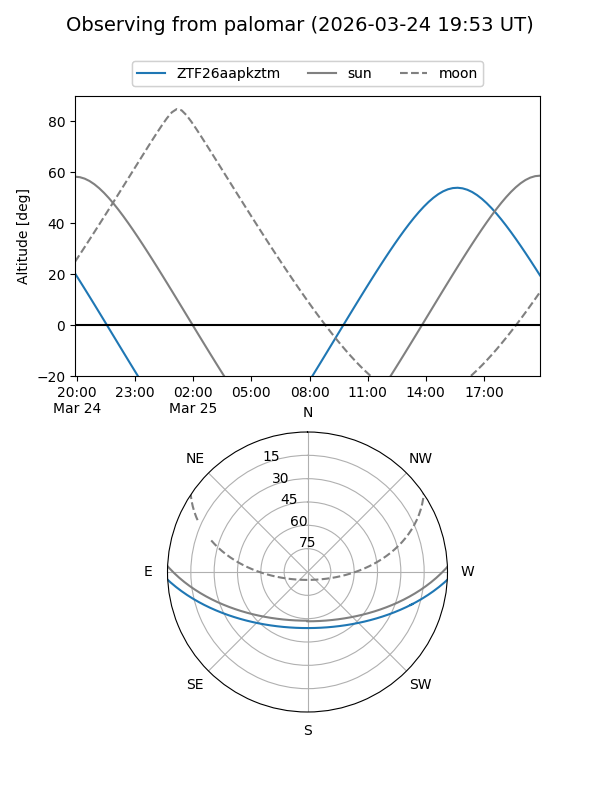

ZTF26aapkztm
Target ZTF26aapkztm at 2026-03-24 15:25
Aliases and brokers:
FINK: link
Lasair: link
ALeRCE: link
alt names
ZTF26aapkztm (ztf,fink_ztf)
Coordinates:
equatorial (ra, dec) = 300.0863,-2.75836
equatorial (HMS+DMS) = 20:00:20.70,-02:45:30.11
galactic (l, b) = (38.4434,-16.57154)
Flags:
Photometry:
last ztfr=18.99
1 ztfr detections
Lightcurve

Visibility


Additional plots